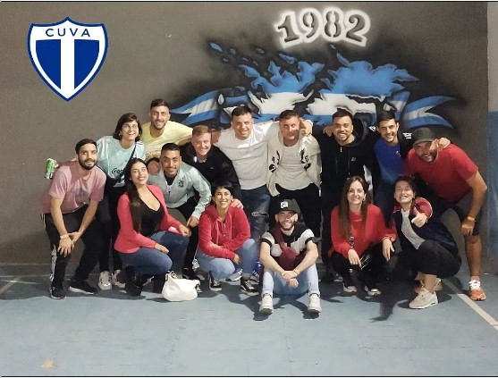

Más de 80 años en el barrio
Nuestra historia es una historia familiar. Hace mas de 80 años un grupo de amigos se juntó para generar un espacio de encuentro y desarrollo social en el barrio de Lanús. Con el correr de los años el club se fue transformando y creciendo en sus distintas actividades. Hoy somos un grupo de amigos y familia que decidimos seguir el legado de nuestros abuelos. El CUVA nos identifica y nos representa y estamos convencidos de que el rol de los clubes sociales es fundamental en cualquier barrio, como lugar de contención, encuentro y desarrollo de todos los chicos y chicas. Un rato en el cub es un rato menos frente a una pantalla pero también es un pibe menos en la calle. Todo lo que hacemos es por el club, para el club y el barrio.
